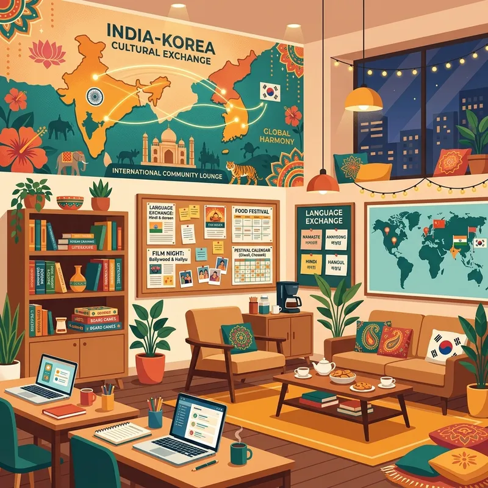

INDIA–KOREA CULTURAL EXCHANGE COMMUNITY: FRIENDSHIP, LANGUAGE, STUDY, TRAVEL AND OPPORTUNITIES

Introduction
The relationship between India and South Korea has grown remarkably over the past few decades. What was once primarily a diplomatic and business partnership has evolved into a cultural connection touching millions of lives. Today, Indians and Koreans are discovering each other’s cultures through friendship, language learning, education, travel, technology, food, entertainment, and professional opportunities.
Why Korea Is Becoming Popular Among Indians
South Korea attracts Indians because of technology, education, culture, tourism, language learning, scholarships, innovation, and career opportunities.
Why Koreans Are Interested in India
Koreans are increasingly interested in India’s history, yoga, spirituality, food, tourism, business opportunities, culture, and diversity.
Building Friendships Across Borders
International friendships help people understand cultures, improve language skills, challenge stereotypes, and build global awareness.
Learning Korean Language
The Korean language has become increasingly popular among Indians. Learning Korean helps with education, travel, career opportunities, and cultural understanding.
Language Exchange Communities
Language exchange communities allow Indians to learn Korean while Koreans improve their English and learn about India.
Indian Students in South Korea
South Korea offers world-class universities, research facilities, scholarships, and international student communities.
Scholarships for Indian Students
Many universities offer scholarships that include tuition assistance, accommodation support, and research funding.
Jobs for Indians in Korea
Opportunities exist in technology, engineering, education, research, business, manufacturing, and multinational corporations.
Korean Companies and Global Opportunities
Korean industries provide opportunities in electronics, automotive, technology, renewable energy, and global trade.
Korean Food Culture
Popular Korean dishes include Kimchi, Bibimbap, Bulgogi, Japchae, Tteokbokki, Kimbap, and Korean Fried Chicken.
Indian Food Through Korean Eyes
Many Koreans enjoy learning about Biryani, Dosa, Idli, Samosa, Chole Bhature, and India’s regional cuisines.
Travel Destinations in Korea
Seoul, Busan, Jeju Island, Incheon, Daegu, and Gyeongju offer unique cultural and travel experiences.
Travel Destinations in India
Mumbai, Hyderabad, Delhi, Jaipur, Goa, Kerala, Bengaluru, and Varanasi showcase India’s diversity.
Similarities Between India and Korea
Both countries value family, education, traditions, hospitality, and strong community relationships.
Top Reasons Koreans Should Learn About India
India offers cultural diversity, entrepreneurship, tourism, education, wellness traditions, and business opportunities.
Study Abroad Resources for Korea
Students should research visas, scholarships, accommodation, universities, health insurance, and language preparation.
Career Opportunities for Korean Speakers in India
Korean language skills are valuable in automotive, electronics, translation, customer support, international business, and consulting.
Korean Tourism Guide for Indians
Korea offers safe cities, modern infrastructure, excellent public transportation, and world-class connectivity.
Indian Tourism Guide for Koreans
India offers heritage tourism, spiritual tourism, food tourism, nature tourism, and festival experiences.
India and Korea in the Future
Future cooperation is expected in AI, renewable energy, semiconductors, smart cities, healthcare, education, tourism, and technology.
Historical Connection Between India and Korea
Historical traditions connect Ayodhya in India with Queen Heo Hwang-ok and the ancient Korean kingdom of Gaya.
Korean Language Learning Roadmap
Beginner, intermediate, and advanced learners can progress through Hangul, grammar, conversation, and professional communication.
Korean Etiquette Every Indian Should Know
Respect for elders, punctuality, bowing, and proper social etiquette are important aspects of Korean culture.
Indian Culture Explained for Korean Visitors
India offers hundreds of traditions, cuisines, languages, festivals, and regional experiences.
Best Korean Cities for International Students
Seoul, Busan, Daejeon, Daegu, and Incheon are among the top destinations for international education.
Best Indian Cities for Korean Visitors
Mumbai, Hyderabad, Bengaluru, Delhi, Jaipur, and Kochi provide unique cultural and business experiences.
Indian Startups and Korean Innovation
Both countries can collaborate in AI, fintech, renewable energy, robotics, healthcare technology, and semiconductors.
Korean Entertainment Beyond K-Pop
Explore Korean literature, cinema, architecture, art, traditional music, and history.
Volunteering and Cultural Exchange Programs
Students can participate in exchange programs, volunteer projects, workshops, and international student clubs.
Digital Nomads and Remote Workers in Korea
Korea provides excellent infrastructure, internet connectivity, transportation, and safety for remote professionals.
Why Join IndiaDostiChat.com
IndiaDostiChat.com aims to connect Indians and Koreans through friendship, cultural exchange, language learning, travel discussions, study resources, and community forums.
SEO Keywords Included
Keywords: Indian Korean Friendship India Korea Cultural Exchange Korean Friends Online Study in Korea for Indians Jobs in Korea for Indians Korean Language Learning Learn Korean Language Korean Culture Guide Indians Living in Korea Korean Language Exchange Korean Universities Korean Scholarships Korea Travel Guide India Tourism for Koreans Korean Culture Community International Friendship Community Korean Food Guide Korean Festivals Korean Tourism India Korea Community
Conclusion
Friendship creates understanding. Understanding creates respect. Respect builds stronger international relationships. Through language learning, travel, education, culture, and friendship, India and Korea can continue building stronger connections for future generations.
No registration required • 100% Free • Join in 5 seconds
Frequently Asked Questions
What is the Global Korea Scholarship (GKS)?
The GKS is a fully-funded scholarship program by the South Korean government for international students to pursue undergraduate and postgraduate degrees in Korea.
Are there job opportunities in South Korea for Indians?
Yes. Opportunities are abundant in IT, engineering, software development, biotechnology, and multinational corporate roles.
How long does it take to learn basic conversational Korean?
With daily practice, most learners can grasp basic conversational Korean in 3 to 6 months. Learning the Hangul alphabet takes only a few hours.
What is the best way to practice speaking Korean?
Practicing with native speakers in language exchange communities is the most effective way. IndiaDostiChat provides a safe space for real-time text practice.